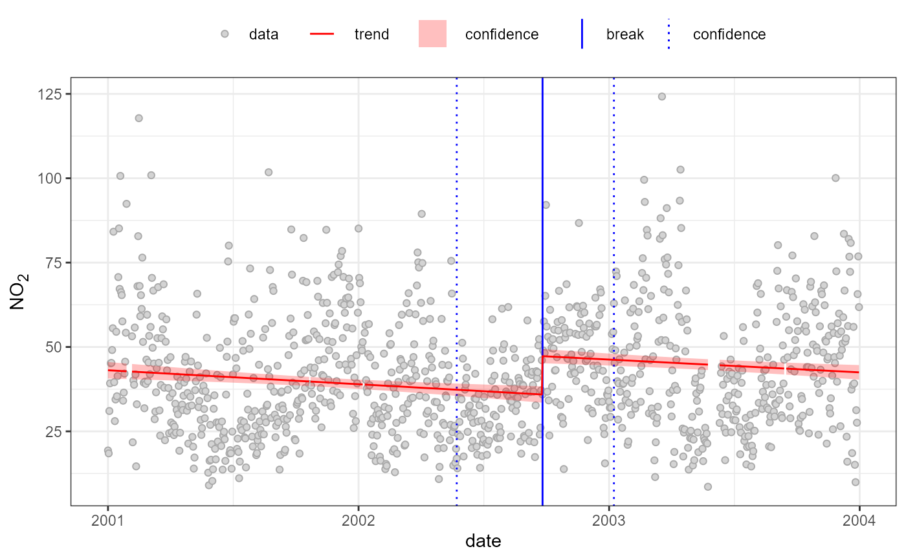

quantify break-point/segments
quantify.breaks.RdQuantify either break-points or break-segment methods for pollutant time-series
Usage
quantBreakPoints(
data,
pollutant,
breaks,
ylab = NULL,
xlab = NULL,
pt.col = c("lightgrey", "darkgrey"),
line.col = "red",
break.col = "blue",
show = c("plot", "report"),
...
)
quantBreakSegments(
data,
pollutant,
breaks,
ylab = NULL,
xlab = NULL,
pt.col = c("lightgrey", "darkgrey"),
line.col = "red",
break.col = "blue",
seg.method = 2,
show = c("plot", "report"),
...
)Arguments
- data
Data source, typically a data.frame or similar, containing data-series to model and a paired time-stamp data-series, named date.
- pollutant
The name of the data-series to break-point or break-segment model.
- breaks
(Optional) The break-points and confidence intervals to use when building either break-point or break-segment models. If not supplied these are build using
findBreakPointsand supplied arguments.- ylab
Y-label term, by default pollutant.
- xlab
X-label term, by default date.
- pt.col
Point fill and line colours for plot, defaults lightgrey and darkgrey.
- line.col
Line colour for plot, default red.
- break.col
Break-point/segment colour for plot, default blue.
- show
What to show before returning the break-point quantification mode, by default plot and report.
- ...
other parameters
- seg.method
(
quantBreakSegmentsonly) the break-segment fitting method to use.
Value
Both functions use the show argument
to control which elements of the functions outputs
are shown but also invisible return a listof all outputs which can caught using, e.g.:
brk.mod <- quantBreakPoints(data, pollutant)
Details
quantBreakPoints and
quantBreakSegments both use
strucchange methods to identify potential
break-points in time-series, and then quantify
these as conventional break-points or break-segments,
respectively:
Finding Break-points Using the
strucchangemethods of Zeileis and colleagues and independent change detection model, the functions apply a rolling-window approach, assuming the first window (or data subset) is without change, building a statistical model of that, advancing the window, building a second model and comparing these, and so on, to identify the most likely points of change in a larger data-series. See alsofindBreakPointsQuantifying Break-points Using the supplied break-points to build a break-point model.
Quantifying Break-segments Using the confidence regions for the supplied break-points as the starting points to build a break-segment model.
Note
AQEval function quantBreakSegments
is currently running segmented v.1.3-4 while we
evaluate latest version, v.1.4-0.
References
Regarding strucchange methods see in-package
documentation, e.g. breakpoints,
and:
Achim Zeileis, Friedrich Leisch, Kurt Hornik and Christian Kleiber (2002). strucchange: An R Package for Testing for Structural Change in Linear Regression Models. Journal of Statistical Software, 7(2), 1-38. URL http://www.jstatsoft.org/v07/i02/.
Achim Zeileis, Christian Kleiber, Walter Kraemer and Kurt Hornik (2003). Testing and Dating of Structural Changes in Practice. Computational Statistics & Data Analysis, 44, 109-123. DOI https://doi.org/10.1016/S0167-9473(03)00030-6.
Regarding segmented methods see in-package
documentation, e.g.
segmented, and:
Vito M. R. Muggeo (2003). Estimating regression models with unknown break-points. Statistics in Medicine, 22, 3055-3071. DOI https://doi.org/10.1002/sim.1545.
Vito M. R. Muggeo (2008). segmented: an R Package to Fit Regression Models with Broken-Line Relationships. R News, 8/1, 20-25. URL https://cran.r-project.org/doc/Rnews/.
Vito M. R. Muggeo (2016). Testing with a nuisance parameter present only under the alternative: a score-based approach with application to segmented modelling. J of Statistical Computation and Simulation, 86, 3059-3067. DOI https://doi.org/10.1080/00949655.2016.1149855.
Vito M. R. Muggeo (2017). Interval estimation for the breakpoint in segmented regression: a smoothed score-based approach. Australian & New Zealand Journal of Statistics, 59, 311-322. DOI https://doi.org/10.1111/anzs.12200.
Regarding break-points/segment methods, see:
Ropkins et al (In Prep).
Examples
#using openair timeAverage to covert 1-hour data to 1-day averages
temp <- openair::timeAverage(aq.data, "1 day")
#break-points
quantBreakPoints(temp, "no2", h=0.3)
#> Using 1 of 1 suggested breaks: 1
#>
#> 2002-09-26 (2002-05-24 to 2003-01-08)
#> 35.93->47.28;11.35 (32%)

#break-segments
quantBreakSegments(temp, "no2", h=0.3)
#> Using 1 of 1 suggested breaks: 1
#> Error in lm.fit(x, y, offset = offset, singular.ok = singular.ok, ...) :
#> 0 (non-NA) cases
#> building 3 segments
#>
#> 2001-01-01 to 2002-08-26 (602)
#> 43.78->35.57;-8.208 (-18.75%)
#>
#> 2002-08-26 to 2002-10-21 (56)
#> 35.57->46.02;10.44 (29.35%)
#>
#> 2002-10-21 to 2003-12-31 (436)
#> 46.02->43.61;-2.406 (-5.23%)